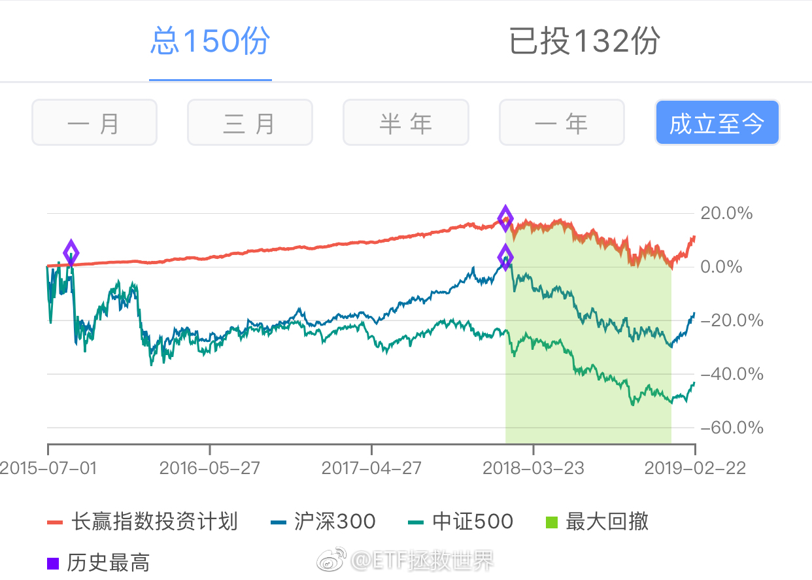

@ETF拯救世界:
还差6个点就可以新高，沪深300新高需要涨20%，中证500新高需要翻番。下跌是好事，各位应该有体会了。
回头看，计划还有很多需要反思的地方，也有很大进步空间。虽然熊市不赔的目标完成，也建立起了满意的仓位，但是其实还可以做的更好。有一些机会没有抓住，有一些失误其实可以避免。
这就是成长。虽然不是最好，但会越来越好。
加油。
回头看，计划还有很多需要反思的地方，也有很大进步空间。虽然熊市不赔的目标完成，也建立起了满意的仓位，但是其实还可以做的更好。有一些机会没有抓住，有一些失误其实可以避免。
这就是成长。虽然不是最好，但会越来越好。
加油。
- 